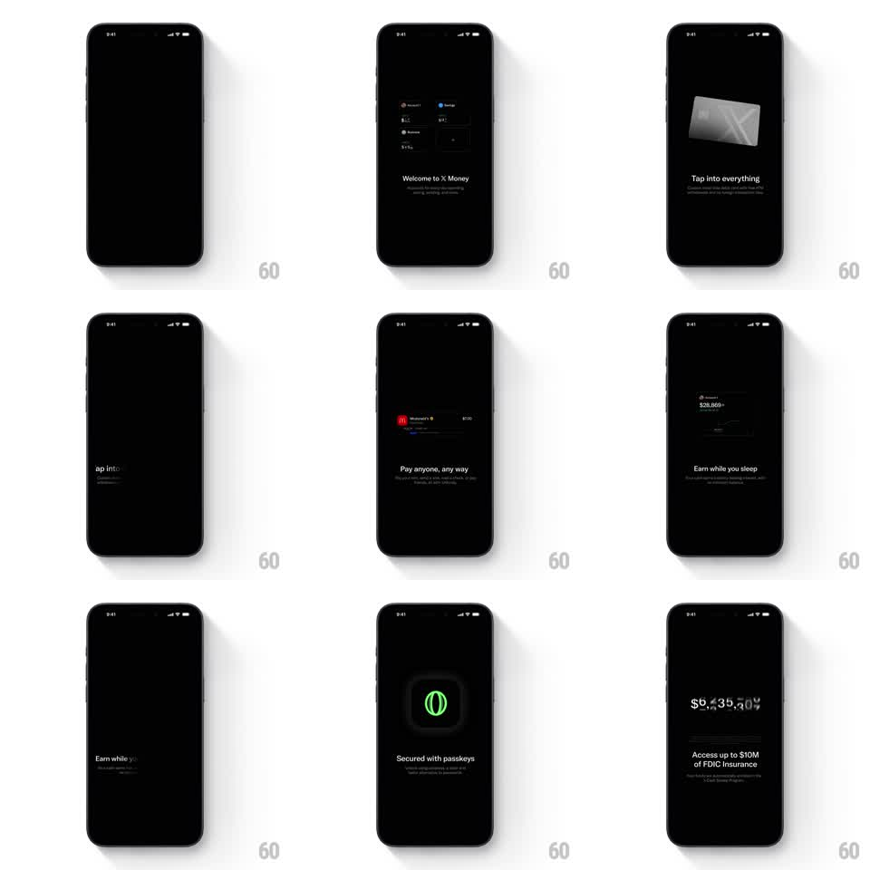

Media
Frame-by-frame

Rebuild this animation 1:1: X Money's intro sequence - a dark, cinematic onboarding where each feature beat lands on black: a 3D metal card tilts in, a payment row assembles, a growth chart draws with a ticker counting up, a passkey glyph glows green, and big balance numerals tick rapidly.

Rebuild this animation 1:1: X Money's intro sequence - a dark, cinematic onboarding where each feature beat lands on black: a 3D metal card tilts in, a payment row assembles, a growth chart draws with a ticker counting up, a passkey glyph glows green, and big balance numerals tick rapidly. ## Integration Integration: stack-agnostic spec - springs given as stiffness/damping, timed motions as duration + curve; map every value to your framework and animation library of choice. ## Scene Near-black full screen, one centered feature moment at a time with a short headline + subline: "Welcome to X Money", "Tap into everything" (3D card), "Pay anyone, any way" (payment row), "Earn while you sleep" (counter 8,869+), "Secured with passkeys" (green glyph), "Access up to 0M of FDIC insurance". ## Motion spec Pattern: auto-advancing beat sequence, ~2.5s per beat, ~15s total. - Transitions: current beat's elements scale down + fade (250ms), next beat's elements rise 16px + fade in (300ms, ease-out). Headline swaps with a 40ms word stagger. - 3D card: tilts slowly (rotateY -15deg -> +10deg, looping 5s) with a moving specular highlight. - Payment row: avatar + brand icon slide in from opposite edges and meet (spring ~300/22). - Counters: numerals tick from 0 to the target (1.2s, ease-out) with tabular-nums; large balances group with commas as they grow. - Passkey glyph: soft green glow pulses twice (1.5s each) then holds at 40%. ## Calibration - One idea per beat, lots of black space - the emptiness is the luxury. - Tickers use tabular figures so digits never jiggle. ## Reduced motion Beats crossfade (250ms); counters set instantly. ## Don't miss - The metal card's highlight sweeps as it tilts - flat shading kills it. - Auto-advance pauses if the user touches the screen.